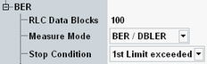

General BER PS Settings
The settings in the "BER" section of the "GSM BER Configuration" dialog configure the scope of the measurement.
See also: "Statistical Settings"

Statistical settings
Defines the number of RLC data blocks to be evaluated per measurement cycle (statistics cycle, single-shot measurement). Received blocks with CRC error do not contribute to the statistic count.
See also: "Statistical Results"
Specifies the measurement mode for BER PS measurements, see "BER PS Measurement".
The following modes are available:
- "BER/DBLER": Bit error rate / data block error rate
- "Mean BEP": Mean bit error probability
- "UBONly": USF BLER only (for test mode B)
Specifies the conditions for an early termination of the measurement:
- "None": The measurement is performed for the selected "No. of Frames", irrespective of the limit check results.
- "1st Limit Exceeded": The measurement is stopped when the first limit is exceeded. If no limit failure occurs, the measurement is performed according to the defined "RLC Data Blocks".
Use this value for measurements that are intended for checking limits, e.g. production tests.